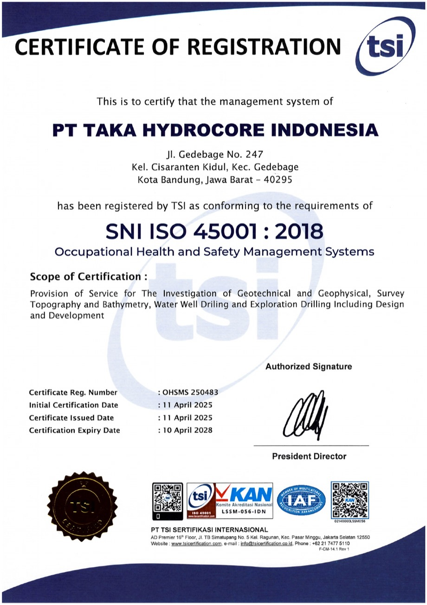
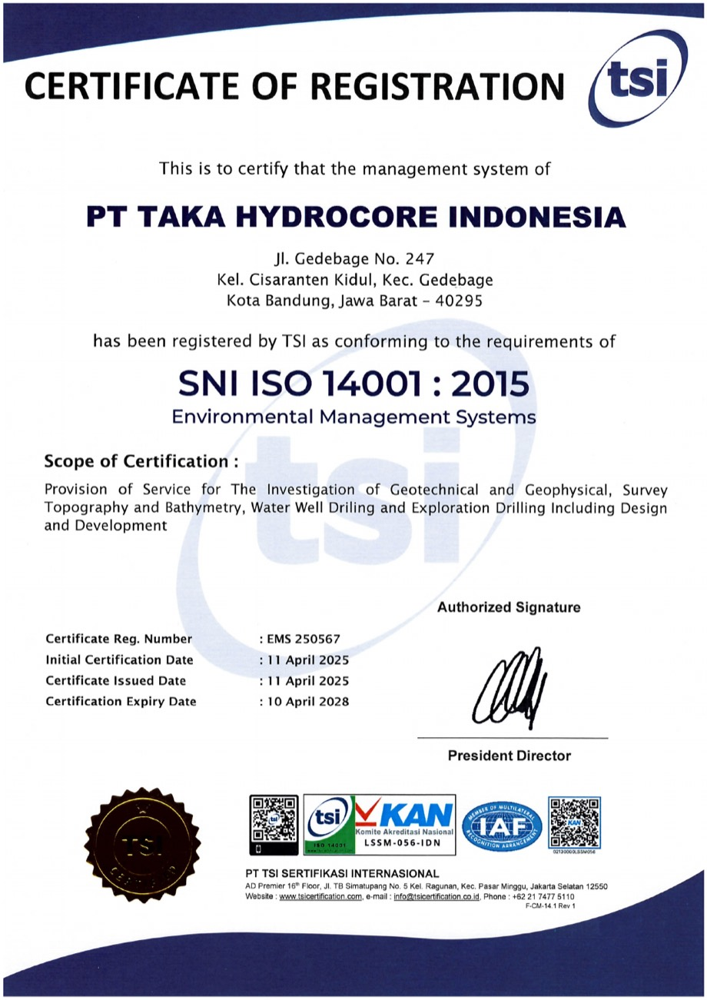
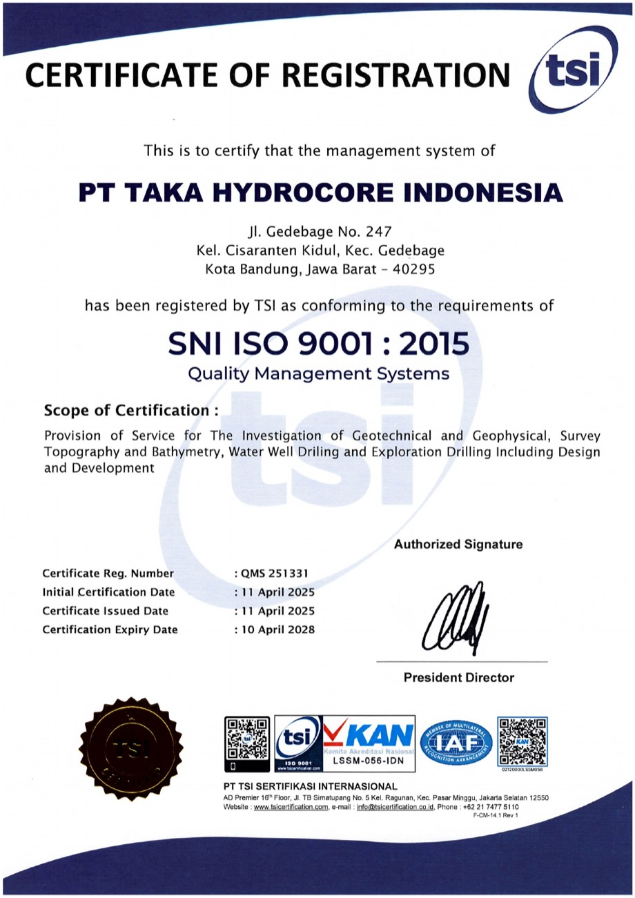
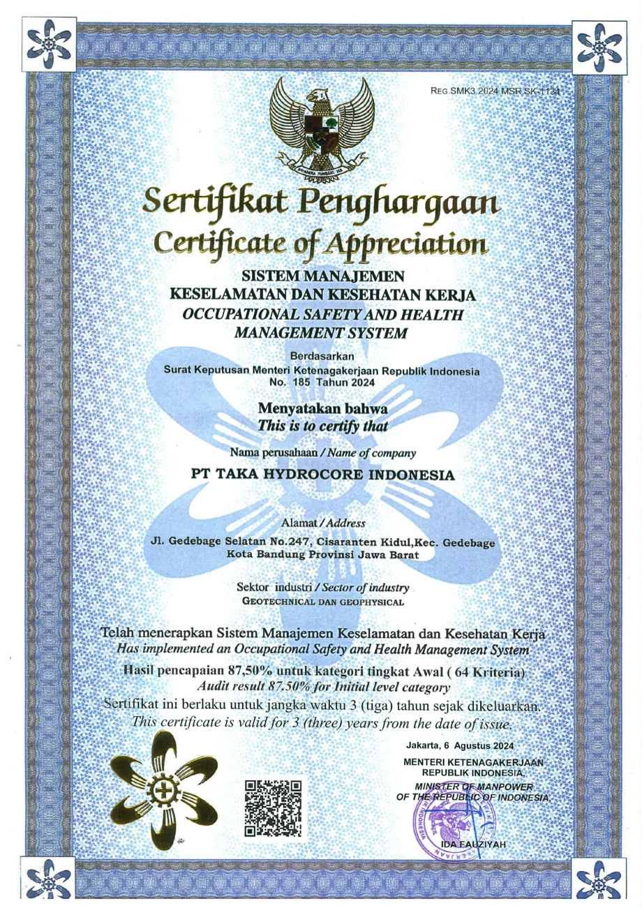
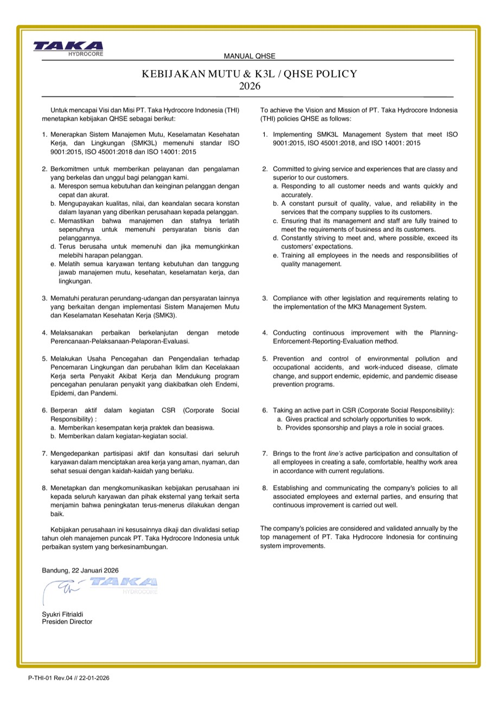
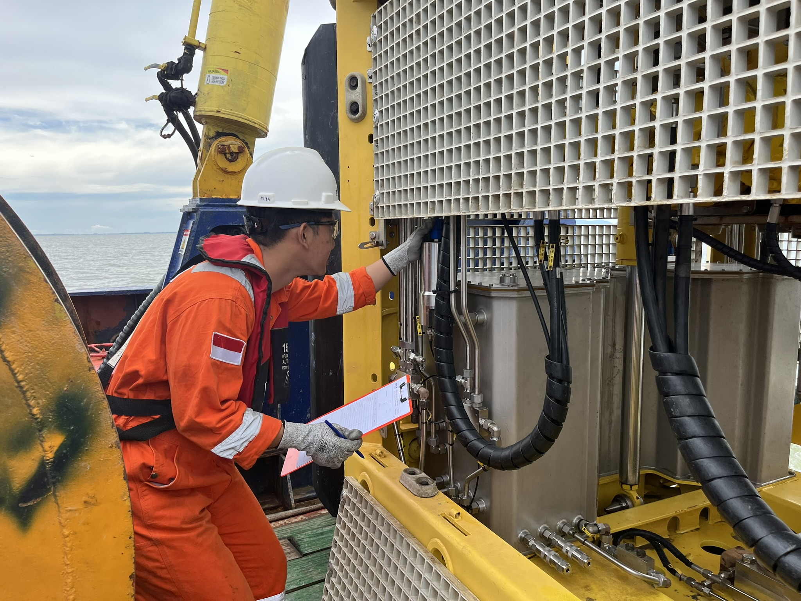
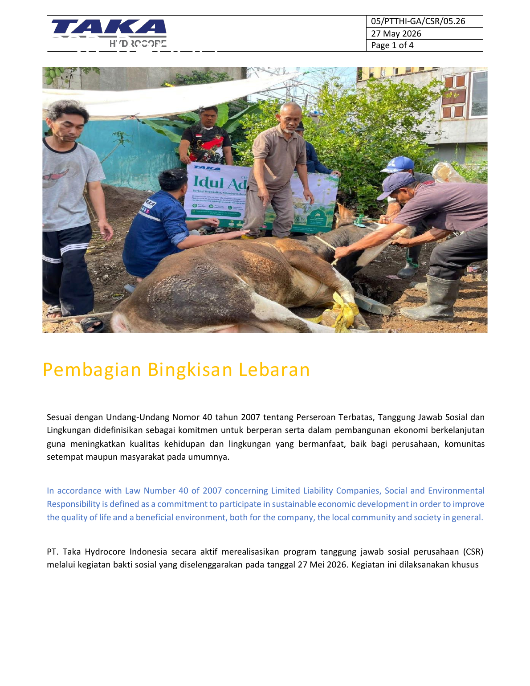

People
Fit-to-work personnel, toolbox talks, training needs, and clear roles before activity starts.
QHSE
For THI, QHSE is field discipline: crews plan the work, check the equipment, brief the risks, control the worksite, and close out records before the result is handed over.
Operating commitment
Each scope is prepared with practical controls: competent crews, maintained equipment, valid certificates, load-tested lifting gear, job-risk review, emergency readiness, and clear field records.


Field preparation
Fit-to-work personnel, toolbox talks, training needs, and clear roles before activity starts.
Maintained, inspected, certified, and load tested equipment prepared before mobilization.
Access, lifting, marine activity, emergency response, and environmental controls reviewed with the crew.
STOP cards, inspection logs, certificates, permits, and close-out records kept available for review.
Certificates and formal references
These documents support how THI manages quality, occupational safety, environmental control, and Indonesian local HSE requirements across office preparation and field execution.

Supports occupational health and safety controls for personnel readiness, worksite discipline, and safer field execution.

Supports environmental management practices aligned with THI's commitment to prevent damage to the environment.

Supports consistent service delivery, documentation control, and quality assurance across survey and drilling work.

Local SMK3 recognition for occupational safety and health management implementation in Indonesia.
QHSE Policy
The 2026 policy sets out practical commitments for management systems, customer service, compliance, improvement, environmental and accident prevention, CSR, employee participation, and policy communication.


Implement quality, occupational health and safety, and environmental systems aligned with ISO 9001, ISO 45001, and ISO 14001.

Respond quickly and accurately, pursue quality and reliability, and aim to meet or exceed customer expectations.
Comply with legislation and other requirements related to quality and occupational health and safety management.

Improve through planning, implementation, reporting, and evaluation across company activities.

Prevent environmental pollution, climate impact, occupational accidents, work-related illness, and disease transmission risk.

Support social responsibility through practical work opportunities, scholarships, sponsorship, and social activities.

Encourage active employee participation and consultation to create a safe, comfortable, and healthy workplace.

Communicate company policy to employees and relevant external parties, with annual review by top management.